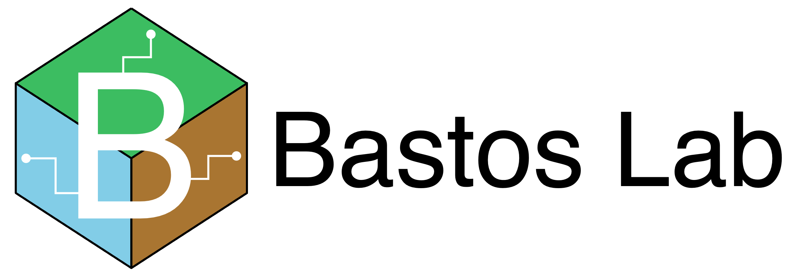

👋 Hello there!
Welcome to the Bastos Lab home page.
Bastos Lab is part of the Integrative Precision Agriculture cluster at the University of Georgia.
Research areas we are currently tackling range from within-field to regional and include:
Sensor-based variable rate management of nutrients and chemicals during the growing season in corn and cotton
Cotton fiber quality regional envirotyping
Cotton fiber quality pre-harvest prediction
🗓️ Upcoming
Here’s a list of upcoming courses, workshops, and invited talks.
Courses 👨🏫
🌎 Advanced Topics in Precision Agriculture
Will be offered at UGA in the Spring Semester of 2023
3 credit hours, meet 3x a week
Undergraduate/Graduate student level course
Explore the entire cycle of gathering, cleaning, processing and interpolating important precision ag data layers like yield monitor and soil electrical conductivity with the goal of creating zones for variable rate input recommendation and profitability.
All analysis conducted in R/RStudio with a focus in automation and reproducibility.
Interested in the class but not a student at UGA? Check out the class website here to find the class agenda with links for recorded lectures on YouTube and partial and complete code on GitHub.
👩💻 Data science applied to agriculture and natural resources
Will be offered at UGA in the Fall Semester of 2023
3 credit hours, meet 3x a week
Undergraduate/Graduate student level course
Topics covered include statistical programming in R, RStudio projects, literate programming with Quarto, version control with git and GitHub, analysis workflow development (data import, EDA, modeling, model checking, extracting means and pairwise comparison letters, and creating publication-ready plots), and data analysis deliverable presentation in the form of dashboards and websites.
Workshops 💻
Leo Bastos will be teaching the following workshops:
📈 ANOVA vs. Regression
When: September 12th 2022
Who: University of Georgia and Kansas State University graduate students, staff, and faculty
Where: via zoom (link to be shared with registrants)
What: the workshop will explore the difference between ANOVA and regression analysis and some cool applications of regression like prediction and finding an optimum input rate that maximizes yield.
Invited Talks 🗣️
🛤️ “From zero to hero: a researcher’s path through data science tools for reproducibility”
When: November 21st 2022, 3 to 4 pm
Where: Miller Hall, Athens GA
Hosts: Plant Pathology Seminar Series, Department of Plant Pathology, University of Georgia
🌦️ “State-wide weather data interpolation for use in digital agriculture”
When: November 30th 2022, noon to 1 pm
Where: TBD
Hosts: Crop Sciences Seminar Series, Department of Agronomy, University of Illinois at Urbana-Champaign
👆 Explore above
Check the tabs on top to learn more about:
Our team members and lab openings
Our current projects
Our lab manual and resources